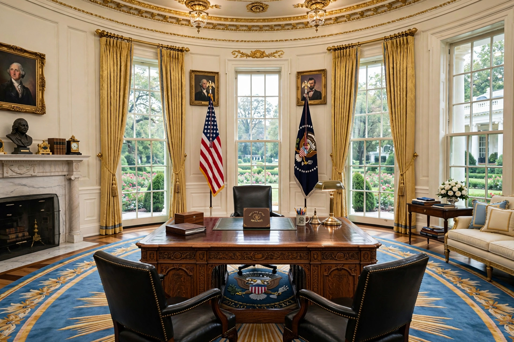

The Oval Office is the formal working office of the president of the United States, in the West Wing of the White House. Its oval shape derives from George Washington's bow-shaped reception rooms.
William Howard Taft created the first Oval Office in 1909; after a 1933 fire, Franklin D. Roosevelt rebuilt it in its current southeast-corner location in 1934. Each president redecorates, selecting rugs, draperies, and paintings.
The Resolute desk, made from HMS Resolute timbers, has been used by most presidents since 1880. Three tall windows behind the desk overlook the Rose Garden, flanked by the presidential and US flags. Famous moments include Nixon's resignation-era calls, Oval Office Addresses, and bill signings.